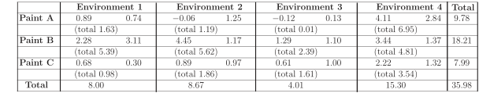

Long description: table9

Alt text: A table showing the means and total sums for several pairs of environmental measurements.
This description was generated by AI and has not been verified by a human. If you spot an error, please use the feedback link below.
- The table has labeled rows for Paint A, Paint B, and Paint C, and labeled columns for Environment 1, Environment 2, Environment 3, and Environment 4, plus a 'Total' column.
- Beneath the primary data in each cell, a value enclosed in parentheses represents a 'total'.
- For Paint A, the row shows the following values across the environments: 0.89 (total 1.63) for Environment 1, 0.74 (total 1.19) for Environment 2, -0.26 (total 0.01) for Environment 3, and 1.25 (total 2.84) for Environment 4, with a grand total of 2.98.
- For Paint B, the row displays the following values: 2.28 (total 5.39) for Environment 1, 3.11 (total 2.29) for Environment 2, 4.45 (total 1.17) for Environment 3, and 1.29 (total 6.95) for Environment 4, with a grand total of 11.73.
- For Paint C, the row shows: 0.68 (total 2.39) for Environment 1, 0.30 (total 5.62) for Environment 2, 0.89 (total 1.17) for Environment 3, and 0.97 (total 2.32) for Environment 4, with a grand total of 3.14.
- The bottom row, labeled 'Total', summarizes the totals for each environment: 8.00 (total 4.81) for Environment 1, 8.67 (total 1.61) for Environment 2, 4.01 (total 3.54) for Environment 3, and 15.30 (total 7.99) for Environment 4.